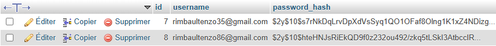
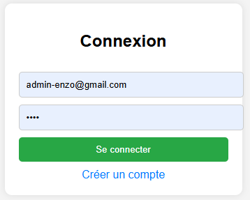
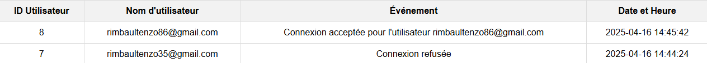
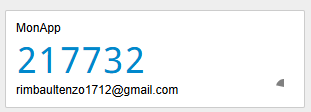

Projet Authentification Sécurisée en PHP
Description Générale
Ce projet propose deux systèmes de double authentification (2FA) pour renforcer la sécurité d’un site :
l’un utilisant l’envoi de code par email (PHPMailer), l’autre s’appuyant sur Google Authenticator (TOTP).
Il inclut également la journalisation des connexions, une inscription sécurisée et un espace utilisateur.
Technologies Utilisées
- PHP : traitement back-end, sessions, logique d’authentification.
- MySQL : base de données utilisateurs et logs.
- PHPMailer : envoi de code de validation par e-mail.
- Google Authenticator : génération de code TOTP.
Structure du Projet
index.php : connexion utilisateur.register.php : création de compte.accueil.php : page après connexion réussie.log.php : affichage sécurisé des journaux de connexions.verify.php : saisie et vérification du code 2FA.database.php : configuration MySQL.
Fonctionnalités Clés
- 👤 Connexion et inscription sécurisée.
- 🔒 Hashage des mots de passe avec
password_hash().
- 📜 Enregistrement des tentatives de connexion (succès/échec).
- 📧 Double Authentification par e-mail avec PHPMailer.
- 📱 Double Authentification avec Google Authenticator (TOTP).
🔐 Double Authentification par Google Authenticator (TOTP)
Cette méthode repose sur la génération d’un code à usage unique, qui change toutes les 30 secondes,
synchronisé avec l’horloge du serveur et une clé secrète partagée avec l'application Google Authenticator.
- ✅ À l’activation, un QR Code est généré et scanné dans l’application.
- 📲 À chaque connexion, l’utilisateur saisit le code temporaire généré par l’application.
- 💡 Le système vérifie la validité du code avec un algorithme TOTP côté serveur.
- 🛡️ Même si un mot de passe est volé, l'accès reste protégé sans ce code TOTP.
📧 Double Authentification via E-mail (PHPMailer)
Cette solution génère un code aléatoire (6 chiffres) envoyé par e-mail à l’utilisateur après sa connexion
avec identifiants classiques.
- 📨 Le code est envoyé à l’adresse e-mail associée à l’utilisateur.
- ⏳ Il est valide pendant 5 minutes maximum.
- 🔍 L’utilisateur le saisit sur la page
verify.php pour terminer la connexion.
- 📤 L’envoi est géré avec PHPMailer via SMTP (ex : Gmail).
- 🔁 Si le code est incorrect ou expiré, l’accès est refusé.
📜 Logs de Connexion
Toutes les tentatives de connexion sont enregistrées dans une table logs, avec :
- 🆔 Identifiant utilisateur
- 📅 Date et heure
- 🔍 Résultat : succès ou échec
- 🌍 Adresse IP
Une interface dédiée (protégée) permet de visualiser l’historique.
Conclusion
Ce projet propose deux approches de double authentification (e-mail vs TOTP),
apportant une excellente base pour tout système sécurisé. L'intégration des logs renforce encore plus
le contrôle sur les accès, avec des outils simples et efficaces à déployer dans n’importe quelle architecture PHP.
📷 Illustrations et Captures d’Écran
📁 Tables MySQL
Table des utilisateurs (users) :

📜 Interface de connexion
Cette page affiche un Formulaire de connexion ou l'utilisateur est invité à rentrer son nom d'utilisateur et son mot de passe:

📜 Interface des logs
Cette page affiche les connexions réussies ou échouées dans un tableau structuré et sécurisé :

📧 Vérification par e-mail
Formulaire de saisie du code reçu par e-mail (via PHPMailer) :
📱 Google Authenticator
Page de vérification avec code temporaire généré par Google Authenticator :
